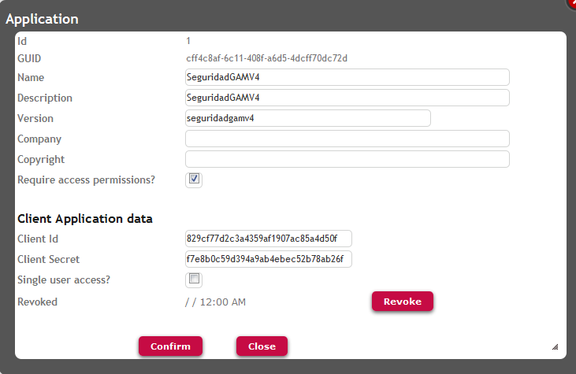

As a security component, GAM can be used by different applications (which can be Smart Device applications, Web applications, or even Web Services).
Conceptually, GAM applications group Permissions which are related to GeneXus objects.
GAM applications are defined within a repository. Each repository can contain more than one GAM application.
Additionally, one Repository can store more than one GAM WEB application because from different KBs you can use a different Application Id to create a different GAM WEB application in the same repository.
First, the GAM application is checked at runtime at the moment of the user authentication.
Another purpose of defining GAM applications within the GAM repository is to associate Permissions to these applications and to form groups of permissions.
At runtime, permissions are checked considering the application which is being executed. So, when the user logs in to a repository, and a permission is needed to execute an action, the permission must be defined in the GAM application he is executing (and he needs to have a role where this permission is allowed).
So the permissions which can be associated to a GAM application are all related in some sense.
By default, when F5 processes permissions, the following GAM applications are created in the repository:
Each GAM application is identified by a GAM application GUID, and has "Client Application data": Client Id and Client Secret information.
You can see the running GAM Backend as an administrator, all the available GAM applications for the repository you've connected to, and you can also define new applications. See figure 1.

When the user executes a web object, the GAM application Identifier is taken from application.gam file located in the virtual directory. See Application Id property in order to understand how this ID is automatically generated.
If the user executes an SD object, the GAM application is identified by its "Client Application data" (Client Id and Client Secret information). See Secure Native Mobile applications architecture to understand how this information is used at low level, using Oauth protocol.
GAM - Permissions
GAM - Repository Connections
GAM - Repository
Require Access Permissions Application Property